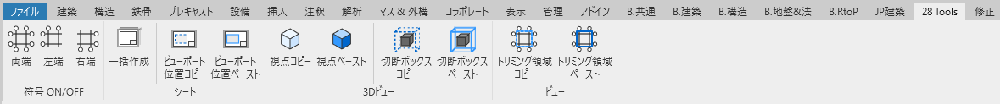

28 Tools
Revit 2021 アドイン操作マニュアル
機能一覧
各機能をクリックすると詳細説明にジャンプします。全ての機能はダイアログなしで瞬時に実行されます。
リボンタブ

Revit起動後、「28 Tools」タブが追加されます。各パネルに機能がグループ化されています。
🔘 符号 ON/OFF
通り芯・レベルの符号表示をワンクリックで切り替える機能です。選択している要素がある場合は選択要素のみ、未選択時は全体に適用されます。
使用方法
- （オプション）特定の通り芯・レベルのみ変更したい場合は事前に選択
- リボンから「両端」「左端」「右端」のいずれかをクリック
- 符号の表示状態が瞬時に切り替わります
💡 ポイント: トグル動作のため、同じボタンを押すと元の状態に戻ります。Ctrl+Zでも元に戻せます。
📋 シート一括作成
図枠ファミリを指定して複数のシートを効率的に作成する機能です。最近使用した図枠が優先表示され、作成数やプレフィックスも選択できます。
使用方法
- 「一括作成」ボタンをクリック
- 図枠ファミリを選択（最近使用したものが上位表示）
- 図枠タイプを選択
- 作成数を選択（1枚、5枚、10枚、20枚）
- プレフィックスを選択（なし、平面図、詳細図、断面図）
- シートが自動的に作成され、既存シートの次の番号から採番されます
💡 ポイント: 各画面で「全画面に戻る」ボタンを使用して選択をやり直すことができます。設定は記憶されるため、次回使用時に前回の選択が優先表示されます。
👁️ 3D視点コピペ
3Dビューの視点（カメラ位置・向き・ズーム）を他の3Dビューに一括適用する機能です。複数のビューを同じ角度で統一したい場合に便利です。
使用方法
- コピー元の3Dビューをアクティブにして「視点コピー」をクリック
- プロジェクトブラウザで対象の3Dビューを選択（Ctrl+クリックで複数選択可能）
- 「視点ペースト」をクリック（選択なしの場合はアクティブビューに適用）
- 選択したビューの視点が瞬時に変更され、画面が自動更新されます
💡 ポイント: 3Dビューのみが対象です。視点情報は一度コピーすれば、Revitを再起動するまで保持されます。
📦 切断ボックスコピペ
3Dビューの切断ボックス（表示範囲の制限）を他の3Dビューに一括適用する機能です。ON/OFF状態も含めて完全にコピーされます。
使用方法
- コピー元の3Dビューをアクティブにして「切断ボックスコピー」をクリック
- プロジェクトブラウザで対象の3Dビューを選択（Ctrl+クリックで複数選択可能）
- 「切断ボックスペースト」をクリック（選択なしの場合はアクティブビューに適用）
- 切断ボックスの範囲とON/OFF状態が瞬時に適用されます
💡 ポイント: 切断ボックスがOFFの場合はOFF状態もコピーされます。3Dビューのみが対象で、情報はRevit再起動まで保持されます。
📐 ビューポート位置コピペ
シート上のビューポート配置位置を他のシートに自動適用する機能です。同名ビューの自動マッチングやパターン認識により、効率的な配置が可能です。
使用方法
- コピー元で以下のいずれかを選択してから「ビューポート位置コピー」をクリック：
- シート上で特定のビューポートを選択
- プロジェクトブラウザでシートを選択（全ビューポート対象）
- プロジェクトブラウザでビューを選択（特定ビューポート対象）
- プロジェクトブラウザで対象のシートを選択（Ctrl+クリックで複数選択可能）
- 「ビューポート位置ペースト」をクリック
- 自動マッチング機能により適切なビューポートに位置が適用されます
💡 ポイント: 同名ビューの完全一致、キーワードマッチング（平面図、断面図など）、階層マッチング（地上階、地下階）により高精度な自動配置を実現します。
✂️ トリミング領域コピペ
ビューのトリミング領域（表示範囲）を他のビューに一括適用する機能です。平面図、断面図、立面図、3Dビューなど幅広いビュータイプに対応しています。
使用方法
- コピー元のビューをアクティブにして「トリミング領域コピー」をクリック
- プロジェクトブラウザで対象のビューを選択（Ctrl+クリックで複数選択可能）
- 「トリミング領域ペースト」をクリック（選択なしの場合はアクティブビューに適用）
- トリミング領域の範囲とON/OFF状態が瞬時に適用されます
💡 ポイント: 対応ビュータイプ：平面図、天井伏図、断面図、立面図、詳細図、3Dビュー。トリミング領域のON/OFF状態も含めて完全にコピーされます。
❓ よくある質問
Q: アドインが表示されません
A: 以下を確認してください：
- Revit 2021で実行しているか
- DLLファイルが正しい場所にあるか
- 診断ツール.batを実行して問題を確認
Q: エラーが発生します
A: 以下を試してください：
- 適切なビュータイプで実行しているか確認
- コピー機能を先に実行してからペースト機能を使用
- Ctrl+Zで操作を元に戻す
Q: 一部のビューで機能しません
A: 各機能には対応ビュータイプがあります：
- 3D視点・切断ボックス：3Dビューのみ
- ビューポート位置：シートのみ
- トリミング領域：平面図、断面図、立面図、詳細図、3Dビュー